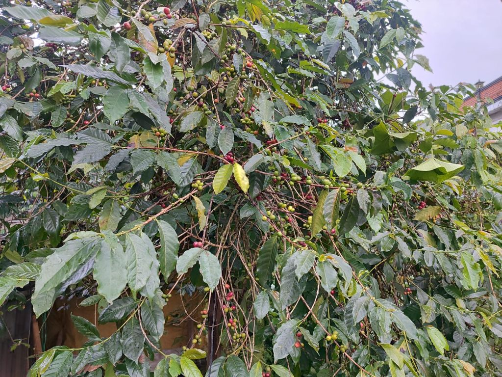
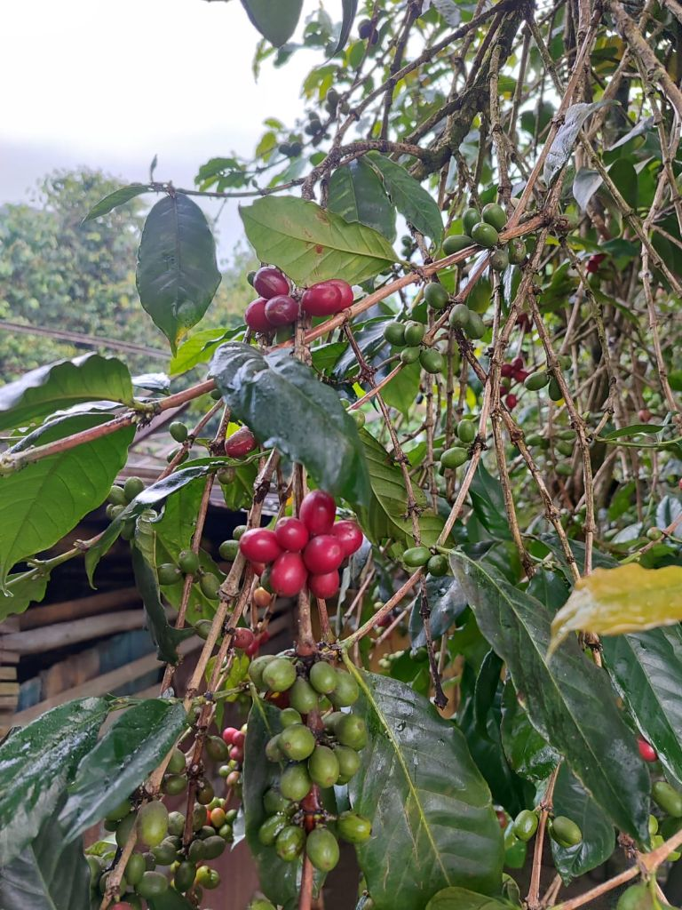
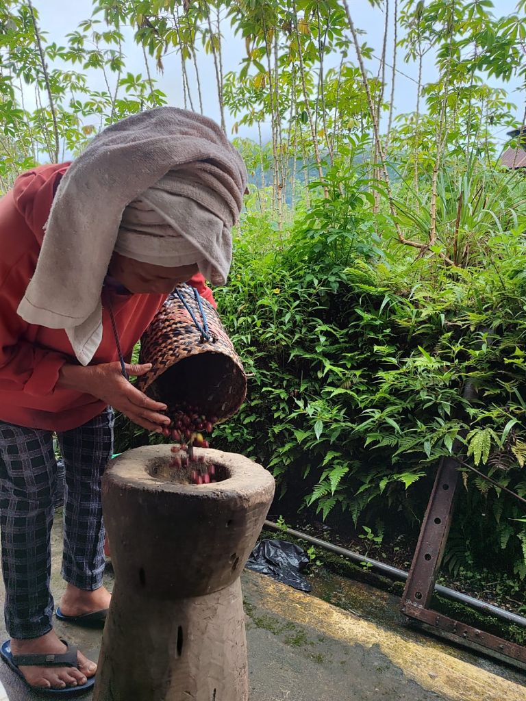
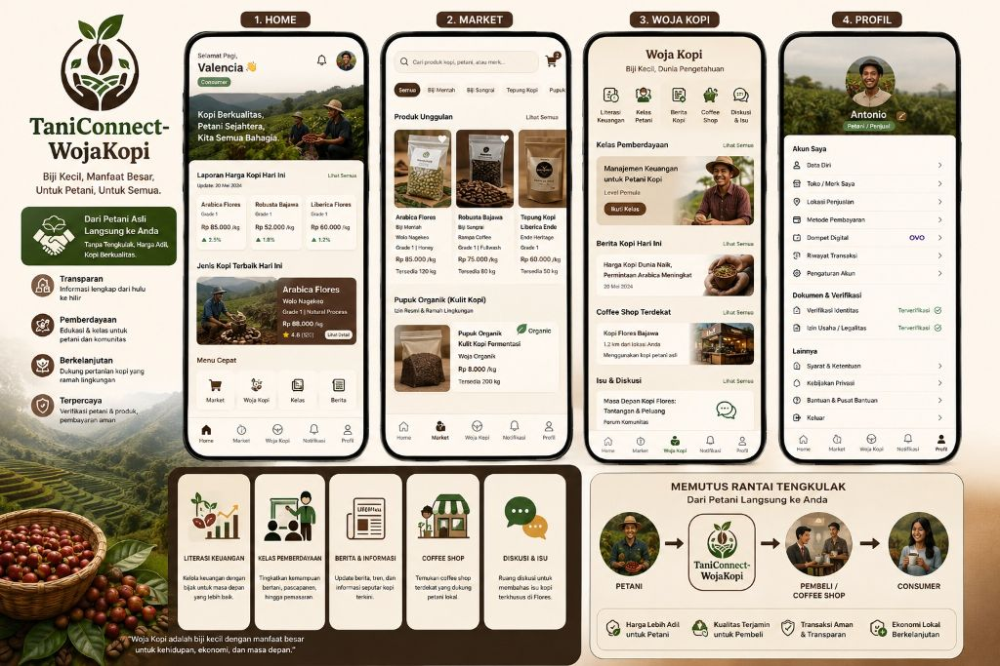

AgriTech • Coffee Ecosystem • Sustainable Platform
Harga kopi utama
Rp 85.000/kg
Arabica Flores Grade 1 naik 2,5%
Kopi unggulan hari ini
Arabica Flores Bajawa
Floral • citrus • clean finish
Model distribusi
Petani → Platform → Buyer
B2C dan B2B dalam satu ekosistem
TaniConnect-WojaKopi, platform kopi Flores yang menghubungkan petani, pasar, dan pengetahuan dalam satu website.
Website ini diposisikan sebagai produk digital milik PT. Nusantara Agri Digital dengan fokus pada perdagangan kopi yang lebih adil, edukasi kopi yang lebih luas, dan pemberdayaan komunitas dari hulu hingga hilir.
Mode simulasi pengguna
Selamat datang, Valencia 👋
ConsumerTaniConnect-WojaKopi
Digitalisasi kopi yang berkeadilan



Transparan
Pemberdayaan
Berkelanjutan
Profil perusahaan
PT. Nusantara Agri Digital
Perusahaan pengembang TaniConnect-WojaKopi yang membawa pendekatan agritech, marketplace, community empowerment, dan literasi kopi dalam satu pengalaman digital.
Konsep utama
Lebih dari sekadar website jual kopi
TaniConnect-WojaKopi dirancang untuk menjawab problem utama petani kopi: keterbatasan akses pasar, dominasi tengkulak, minimnya informasi harga, dan kurangnya ruang pemberdayaan. Karena itu, websitenya memadukan perdagangan, edukasi, identitas petani, dan jejak asal produk.
Home dashboard
Beranda yang langsung informatif
- Sapaan personal sesuai jenis pengguna
- Laporan harga kopi harian berdasarkan jenis dan grade
- Highlight kopi terbaik hari ini
- Shortcut ke market, kelas, berita, dan profil
Nilai kompetisi
Gagasan yang kuat untuk lomba
Mockup ini menonjolkan solusi nyata: digitalisasi perdagangan kopi, penguatan identitas produk lokal Flores, dan peningkatan kapasitas petani.
Keunggulan
One-stop coffee platform
Satu website memuat transaksi, edukasi, isu daerah, forum, verifikasi penjual, hingga promosi coffee shop yang memakai kopi petani asli.
Market
Pasar online untuk green bean, roasted bean, tepung kopi, dan produk turunan
Market dibuat seperti etalase profesional namun tetap ramah pengguna. Buyer bisa membeli untuk konsumsi pribadi, UMKM, reseller, atau coffee shop. Sementara petani dan penjual bisa membuka lapak dengan identitas dan dokumen yang jelas.
Biji Mentah
Arabica Flores Bajawa
Lokasi: Bajawa, Ngada • Grade 1 • Full wash • Stok 120 kg
- Harga: Rp 85.000/kg
- Petani: Kelompok Tani Lereng Inerie
- Buyer cocok: roastery premium dan coffee shop specialty
- Traceability: lokasi kebun dan proses panen tersedia
Biji Sangrai
Robusta Raigewa Roast
Lokasi: Bajawa • Medium roast • Body tebal • Stok 80 kg
- Harga: Rp 75.000/kg
- Brand: Raigewa Coffee
- Profil rasa: chocolate, nutty, bold
- Tersedia kemasan bulk dan retail
Tepung Kopi
Tepung Kopi Woja
Lokasi: Ende • Food grade • Stok 60 kg • Untuk UMKM olahan
- Harga: Rp 60.000/kg
- Merk: WojaKopi
- Cocok untuk cookies, kue, minuman, dan souvenir
- Memperluas nilai tambah pascapanen kopi
Pupuk Organik
Pupuk Organik Kulit Kopi
Produk turunan dari limbah kulit kopi yang diolah secara legal dan berizin.
- Harga: Rp 8.000/kg
- Stok: 200 kg
- Status dokumen: izin penjualan tersedia
- Nilai keberlanjutan: pengurangan limbah dan ekonomi sirkular
Informasi yang wajib ada di setiap produk
- Lokasi kopi dan asal kebun
- Jenis kopi, grade, dan proses
- Harga per kilo dan stok tersedia
- Nama petani, koperasi, atau merk
- Estimasi pengiriman dan metode pembayaran
Fungsi ganda market
- Consumer dapat membeli secara retail
- Coffee shop dapat melakukan pembelian B2B
- Petani/penjual dapat membuka toko dan mengelola produk
- Platform menjadi jembatan langsung, bukan sekadar katalog
Woja Kopi
Ruang besar untuk literasi, pemberdayaan, informasi, dan percakapan kopi Flores
Bagian Woja Kopi mencerminkan filosofi “biji kecil, manfaat besar”. Di sinilah website menjadi platform yang hidup, bukan hanya tempat transaksi, tetapi juga pusat pembelajaran, isu lokal, promosi coffee culture, dan kolaborasi komunitas.
Manajemen arus kas petani
Membantu petani mencatat biaya bibit, pupuk, tenaga kerja, panen, hingga hasil penjualan secara sederhana.
Simulasi margin penjualan
Petani dapat membandingkan pendapatan bila menjual ke tengkulak, buyer langsung, atau lewat platform digital.
Edukasi tabungan & reinvestasi
Mendorong keberlanjutan kebun melalui perencanaan keuangan dan investasi pascapanen.
Kelas budidaya kopi
Materi tentang perawatan pohon, pemupukan, pengendalian hama, dan peningkatan produktivitas kebun.
Kelas pascapanen
Materi sortasi, fermentasi, penjemuran, roasting dasar, dan standar kualitas untuk pasar lebih luas.
Kelas branding & pemasaran
Untuk petani, koperasi, atau UMKM yang ingin membangun merk lokal yang dipercaya pasar.
Harga kopi hari ini
Ringkasan pergerakan harga lokal dan global dengan bahasa sederhana agar mudah dipahami petani.
Tren kopi specialty Flores
Menampilkan berita dan peluang pasar untuk kopi dengan identitas geografis dan mutu tinggi.
Berita komunitas dan event
Festival kopi, bazar, pelatihan, kunjungan buyer, dan program pemberdayaan di wilayah Flores.
Direktori coffee shop
Berisi informasi kedai yang menggunakan kopi dari petani asli, sehingga konsumen tahu jalur cerita kopinya.
Map rasa dan asal kopi
Menghubungkan pengalaman minum kopi dengan lokasi kebun, varietas, dan proses pengolahannya.
Kolaborasi promosi lokal
Menjadi ruang promosi bersama antara petani, roaster, kedai kopi, dan pelaku pariwisata.
Forum isu tengkulak
Membahas rantai perdagangan yang panjang dan strategi agar petani mendapatkan harga lebih sehat.
Ruang aspirasi petani Flores
Petani dapat menyampaikan tantangan terkait alat, akses pasar, pelatihan, hingga dukungan kelembagaan.
Diskusi lintas pelaku
Buyer, consumer, pengusaha, akademisi, dan komunitas kopi dapat berinteraksi dalam satu ekosistem.
Galeri lapangan
Visual kebun, panen, dan proses sebagai penguat cerita produk
Foto-foto lapangan bisa dipakai untuk memperkuat kesan autentik dalam perlombaan: menunjukkan buah kopi di pohon, aktivitas pengolahan, dan kondisi kebun sebagai bukti bahwa platform ini tumbuh dari realitas petani.
Profil akun
Dua kategori pengguna dengan kebutuhan berbeda
Struktur profil dibuat lengkap agar website terlihat matang secara bisnis dan operasional. Consumer fokus pada pembelian, sedangkan petani/penjual fokus pada identitas usaha, verifikasi, lokasi penjualan, dan data produk.
Elemen profil yang ditampilkan
- Nama lengkap, email, nomor telepon, dan alamat
- Status akun: Petani/Penjual atau Consumer
- Metode pembayaran dan integrasi dompet digital
- Syarat dan ketentuan penggunaan website
- Riwayat transaksi, pengaturan akun, dan bantuan
- Khusus penjual: foto, nama tempat/merk, lokasi jualan, dan dokumen verifikasi
A
Antonio
Petani / Penjual terverifikasi
Kategori akunPetani / Penjual
Emailantonio@nusantaraagridigital.id
AlamatNgada, Flores, NTT
Lokasi penjualanPasar Bajawa
Nama tempat / merkRaigewa Coffee
Metode pembayaranOVO, QRIS, Transfer
Status dokumenTerverifikasi
Dampak platform
Memutus rantai tengkulak dan menaikkan nilai kopi lokal
Nilai utama TaniConnect-WojaKopi adalah memperpendek jalur distribusi. Bukan berarti menghilangkan seluruh ekosistem dagang, tetapi membuat transaksi lebih transparan sehingga petani punya posisi tawar yang lebih kuat dan konsumen mendapat informasi yang lebih lengkap.
Petani
→
TaniConnect
WojaKopi
WojaKopi
→
Consumer /
Coffee Shop
Coffee Shop
Untuk petani
Harga lebih adil, akses buyer lebih luas, dan ruang belajar yang berkelanjutan.
Untuk consumer
Asal kopi lebih jelas, kualitas lebih terukur, dan pengalaman membeli lebih bermakna.
Untuk coffee shop
Memudahkan sourcing dari petani asli dengan identitas produk yang kuat.
Untuk daerah
Menggerakkan ekonomi lokal, promosi kopi Flores, dan pengelolaan limbah yang lebih baik.
Roadmap pengembangan
Jika dilanjutkan setelah perlombaan
Mockup ini juga bisa dipresentasikan sebagai produk yang siap dikembangkan bertahap, sehingga terlihat realistis dan visioner di depan juri.
Marketplace & profil verifikasi
Membangun toko online, katalog kopi, registrasi penjual, dan halaman profil.
Woja Kopi Academy
Mengaktifkan kelas online, literasi keuangan, dan forum diskusi kopi Flores.
Traceability & analytics
Jejak asal kopi, dashboard harga, insight panen, dan penguatan pembelian B2B.
Referensi visual
Desain website diselaraskan dengan gambaran aplikasi yang sudah ada
Arah antarmuka mengambil nuansa earthy, rounded card, dan susunan fitur yang konsisten dengan konsep aplikasi TaniConnect-WojaKopi, lalu diperluas menjadi website yang lebih kaya informasi untuk keperluan lomba dan presentasi.
